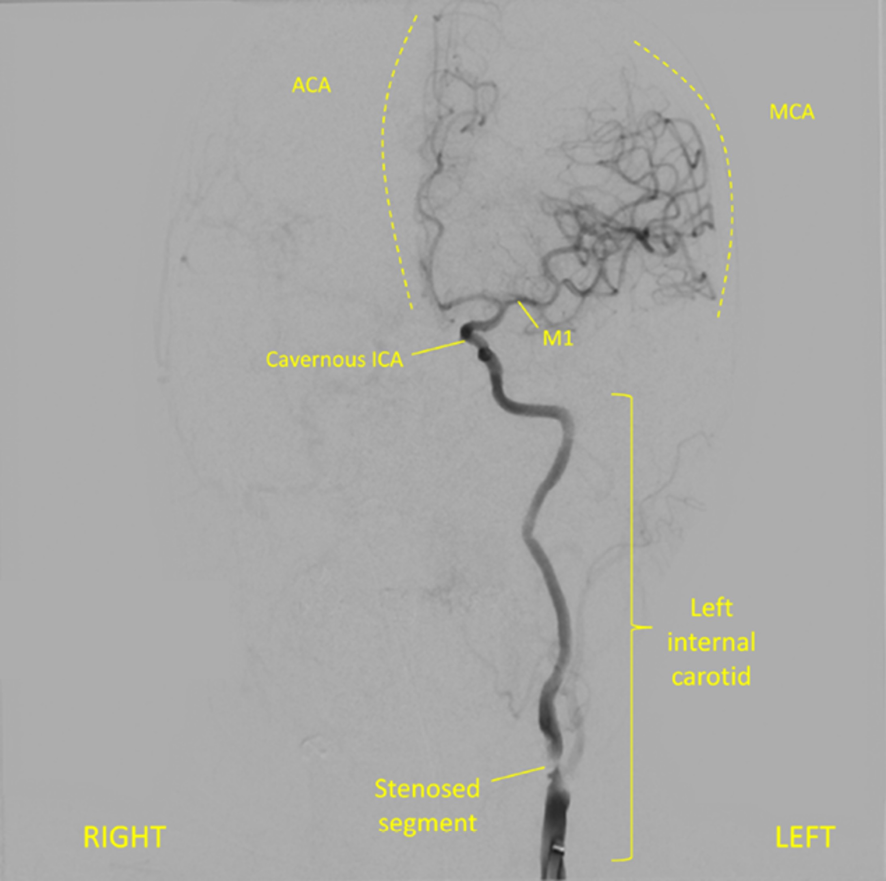

Case 1. Right-sided weakness and inability to speak
Outcome
CT imaging showed no signs of acute haemorrhage. There were changes consistent with early ischaemic changes in the left hemisphere in the MCA territory, with subtle loss of grey-white matter differentiation around the insular territory, as well as hyperattentuation in the left MCA, confirmed on angiography to reflect an occlusive thrombus in the distal M1 segment all the way to the bifurcation. Her carotids were both significantly narrowed by atherosclerosis.

Perfusion imaging indicated a small area of infracted ‘core’ and a large surrounding area of ischaemic, viable, ’penumbra’ - the ratio of the two was 4.6. This suggested a large area of brain under threat of infarction but not yet dead, supported by collateral vessels (for now) – amenable to rescue via reperfusion before the collaterals fail.

The patient was given thrombolysis with alteplase and underwent a thrombectomy, using a guidewire passed from the femoral artery backwards until within the cerebral circulation. The thrombus was retrieved leading to reperfusion in the recanalised vessel, with the restored circulation shown below.
In the recovery zone the patient’s speech was improving and she had regained right-sided movements. She had a 48 hour hospital stay and was fully mobile and with full right-sided strength, but some minor residual hesitancy in speech.
The cause was carotid stenosis, and she underwent successful carotid endarterectomy a week after discharge.
At follow-up she remained well, with complete recovery of her speech and no residual disability whatsoever.
Final diagnosisLeft MCA territory ischaemic total anterior circulation stroke, presenting with hemiplegia, combined dysphasia and hemianopia, due to a left carotid stenosis – with complete recovery after reperfusion therapy
Key points: